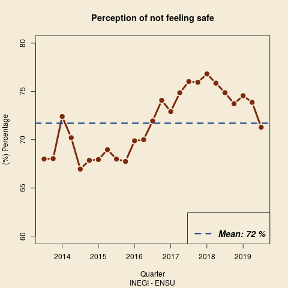
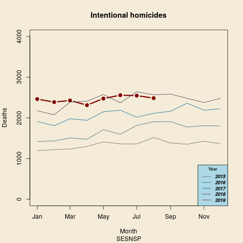
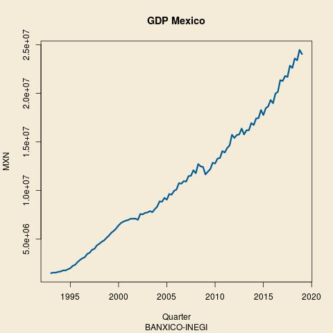

Some Mexican Stats
Table of Contents
by Daniel B.
Last update: 16 Oct 2019
1 Information at hand.
Due to the overwhelming amount of biased news regarding economy, public security and productivity in my country, I have decided to share with you some of the time series I am usually looking at. These are taken from public sources and you will find the link to the data set in the descriptions.
From the beginning of the new government in December 2018, many changes have been outlined and slowly implemented. It is well known that historically Mexico has suffered from increasingly violent crime, huge economic inequality and a lack of good quality public services.
2 Perception of security
In ENSU one can find the perception of feeling safe of the population (over 18 years old) in the cities they live.
| Quarter | Male.Safe | Male.Not.Safe | Female.Safe | Female.Not.Safe | Safe | Not.Safe |
|---|---|---|---|---|---|---|
| Septiembre 2019 | 34 | 65.8 | 23.9 | 75.9 | 28.5 | 71.3 |
| Junio 2019 | 31.7 | 68.2 | 21.2 | 78.7 | 26 | 73.9 |
| Marzo 2019 | 31.5 | 68.3 | 20.2 | 79.6 | 25.3 | 74.6 |
| Diciembre 2018 | 31.2 | 68.6 | 21.8 | 78 | 26 | 73.7 |
| Septiembre 2018 | 30.6 | 69.2 | 19.9 | 79.7 | 24.8 | 74.9 |
| Junio 2018 | 28.5 | 71.3 | 20.2 | 79.6 | 24 | 75.9 |
| Marzo 2018 | 28 | 71.8 | 18.8 | 81 | 23 | 76.8 |
| Diciembre 2017 | 29.3 | 70.6 | 19.4 | 80.5 | 23.9 | 75.9 |
| Septiembre 2017 | 28.8 | 71.1 | 19.6 | 80.3 | 23.8 | 76 |
| Junio 2017 | 30.9 | 68.9 | 19.7 | 80.2 | 25 | 74.9 |
| Marzo 2017 | 32.3 | 67.5 | 22.2 | 77.5 | 26.9 | 72.9 |
| Diciembre 2016 | 31.4 | 68.6 | 21.2 | 78.8 | 25.9 | 74.1 |
| Septiembre 2016 | 32.8 | 67 | 23.5 | 76.2 | 27.8 | 71.9 |
| Junio 2016 | 35.6 | 64.2 | 25 | 74.8 | 29.8 | 70 |
| Marzo 2016 | 34.1 | 65.1 | 25.7 | 73.9 | 29.5 | 69.9 |
| Diciembre 2015 | 37.2 | 62.7 | 28.3 | 71.4 | 32 | 67.7 |
| Septiembre 2015 | 34.2 | 65.8 | 30.2 | 69.7 | 31.9 | 68 |
| Junio 2015 | 35.6 | 64.4 | 27.3 | 72.6 | 30.9 | 69 |
| Marzo 2015 | 34 | 66 | 30.5 | 69.4 | 32 | 67.9 |
| Diciembre 2014 | 35.2 | 64.7 | 29.6 | 70.2 | 32 | 67.9 |
| Septiembre 2014 | 34.1 | 65.8 | 32.3 | 67.7 | 33 | 67 |
| Junio 2014 | 32.7 | 67.2 | 27.1 | 72.5 | 29.6 | 70.2 |
| Marzo 2014 | 28.7 | 71.1 | 26.2 | 73.4 | 27.3 | 72.4 |
| Diciembre 2013 | 37.1 | 62.8 | 28.2 | 71.7 | 31.9 | 68 |
| Septiembre 2013 | 34.8 | 64.8 | 29.5 | 70.3 | 31.7 | 68 |

3 Intentional Homicides
There are tow main sources for Homicide figures in Mexico. On one hand the police's records monthly updated by SESNSP and on the other hand a yearly official figure given by INEGI. We will use the police's record for monitoring purposes.
It is important to recall that the National Guard was recently created and started operations on 30th June 2019. Here we have the monthly intentional homicide reports from SESNSP.
| Year | January | February | March | April | May | June | July | August | September | October | November | December |
|---|---|---|---|---|---|---|---|---|---|---|---|---|
| 2015 | 1197 | 1218 | 1235 | 1297 | 1410 | 1361 | 1360 | 1517 | 1382 | 1352 | 1426 | 1366 |
| 2016 | 1419 | 1434 | 1507 | 1474 | 1709 | 1597 | 1816 | 1905 | 1908 | 1774 | 1809 | 1800 |
| 2017 | 1912 | 1807 | 1978 | 1939 | 2149 | 2188 | 2015 | 2113 | 2161 | 2361 | 2189 | 2222 |
| 2018 | 2174 | 2075 | 2386 | 2407 | 2574 | 2369 | 2640 | 2567 | 2584 | 2479 | 2377 | 2478 |
| 2019 | 2461 | 2387 | 2427 | 2312 | 2474 | 2557 | 2546 | 2484 | nil | nil | nil | nil |
The comparison of the total records of homicide by month grouped by each year are shown in the following plot.

4 Gross Domestic Product
The Bank of Mexico has a large record of the Gross Domestic Product in millions of MXN.
